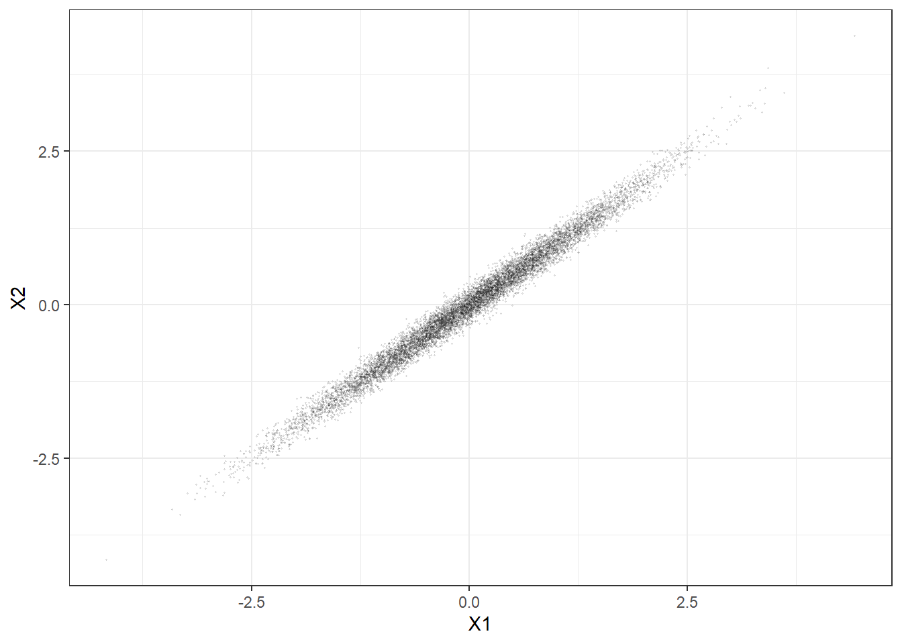

10 Standard errors in linear regression
“He is in this, as in many other cases, led by an invisible hand to promote an end which was no part of his intention. But his standard errors, on the other hand, will always be wrong, for this is the nature of the applied economist.” - Adam Smith (actually Kevin DeLuca)
For the basic OLS model, we assume that the error terms of our regressions, \(\{\epsilon_i\}_{i=1}^N\), (among other things):
- Have a constant variance. That is, no matter two rows of the data we are looking at, it must be that: \[\begin{align} V[\epsilon_i]=V[\epsilon_j]=\sigma^2,\quad \text{for all } i,j\in\{1, 2, \ldots N\} \end{align}\] This is the assumption of {}.
- Are uncorrelated with each other. That is, for any two rows \(i\) and \(j\) of our dataset: \[\begin{align} \mathrm{corr}(\epsilon_i,\epsilon_j)=0,\quad \text{for all } i\neq j \end{align}\]
Note that if either of these are not true, we needn’t worry about all of the nice properties of OLS breaking down. Importantly, if these are the only problems we have, then our slope estimator is still unbiased. What we should worry about, however, is that our standard errors are not calculated correctly, and so without any correction for this, we report the results of hypothesis tests at our own peril. If the former assumption is violated, we refer to this as heteroskedasticity: the variance of the error term is not constant across observations. This is eminently fixable without having any additional insights into your data. On the other hand, if the latter is not true, then we need to know a bit more about our data to fix the problem. For a thorough run-through of these procedures, have a look at (Cameron2015?). What follows is a simplification of that work to the realm of bivariate OLS. The extension to multivariate OLS, and some non-OLS techniques, is relatively straightforward with the right matrix algebra background.
To begin with, let’s see how far we can get with \(V[\hat\beta_1]\) without making any additional assumptions about the error term. The variance of \(\hat\beta_1\) when you {} is: \[\begin{align} V[\hat\beta_1]&=V\left[\frac{\sum_i(X_i-\bar X)\epsilon_i}{\sum_i(X_i-\bar X)^2}\right] \end{align}\] Noting that we are treating the \(X\)s as fixed, without loss of generality, we can write this as: \[\begin{align} V[\hat\beta_1]&=\frac{V\left[\sum_i(X_i-\bar X)\epsilon_i\right]}{\left(\sum_i(X_i-\bar X)^2\right)^2} \label{eq:VBetaHat} \end{align}\] The denominator of this is only a function of the data, so it is easily computable, and doesn’t depend on any assumptions about \(\epsilon\). The numerator, however, simplifies differently depending on our understanding of \(\epsilon\). Before we make any further assumptions about \(\epsilon\), note that we can express the denominator of \(\ref{eq:VBetaHat}\), without loss of generality, as follows: \[\begin{align} V\left[\sum_i(X_i-\bar X)\epsilon_i\right]&= E\left[\left(\sum_i(X_i-\bar X)\epsilon_i-E\left[\sum_j(X_j-\bar X)\epsilon_j\right]\right)^2\right]\label{eq:ClusterVarDiff}\\ %% &=E\left[\left(\sum_i(X_i-\bar X)\epsilon_i\right)^2\right]\label{eq:ClusterE0}\\ &=E\left[\sum_i\sum_j\left((X_i-\bar X)\epsilon_i\right)\left((X_j-\bar X)\epsilon_j\right)\right]\label{eq:clusterExpandSq}\\ %% &=E\left[\sum_i\sum_j(X_i-\bar X)(X_j-\bar X)\epsilon_i\epsilon_j\right]\\ %% &=\sum_i\sum_j(X_i-\bar X)(X_j-\bar X)E[\epsilon_i\epsilon_j]\label{eq:ClusterGeneralSimplified} \end{align}\] where the first line follows by the definition of variance, the second line follows because the expectation of any \(\epsilon_i\) is zero, and the third expands the squared term. What follows are further simplifications of the final line, after making various assumptions about \(E[\epsilon_i\epsilon_j]\).
10.1 Homoskedasticity: the “standard” standard errors
If you have been estimating OLS with free abandon up to this point, this is what you have been doing. Depending on how deep your understanding of OLS is, you would have been implicitly, or (I really hope) explicitly, been making the assumption that the error term has constant variance, and that any two randomly selected errors are uncorrelated with each other. More formally, this means that:
Assumption (Homoskedasticity) \[\begin{align*} V[\epsilon_i]=E[\epsilon_i^2]&=\sigma^2 \text{ for all } i = 1, 2, \ldots N\\ E[\epsilon_i\epsilon_j]&=0 \text{ for all } i\neq j \end{align*}\]
Note that these two restrictions allow us to say something about all of the terms in our expression for the variance. Specifically: \[\begin{align} E[\epsilon_{i}\epsilon_j]&=\begin{cases} \sigma^2 &\text{ if } i=j\\ 0&\text{ otherwise} \end{cases} \end{align}\]
This means that we can simplify the numerator as follows: \[\begin{align} \sum_i\sum_j(X_i-\bar X)(X_j-\bar X)E[\epsilon_i\epsilon_j]&=\sum_i(X_i-\bar X)^2E[\epsilon_i^2]\\ %% &=\sum_i(X_i-\bar X)^2\sigma^2\\ %% &=\sigma^2\sum_i(X_i-\bar X)^2 \end{align}\] Substituting this into our expression of \(V(\hat\beta_1)\) yields: \[\begin{align} V[\hat\beta_1]&=\frac{V\left[\sum_i(X_i-\bar X)\epsilon_i\right]}{\left(\sum_i(X_i-\bar X)^2\right)^2}\\ &=\frac{\sigma^2\sum_i(X_i-\bar X)^2}{\left(\sum_i(X_i-\bar X)^2\right)^2}\\ &=\frac{\sigma^2}{\sum_i(X_i-\bar X)^2}\label{eq:HomoskVar} \end{align}\] The denominator of this is a problem for your computer (i.e. it can always be calculated): it is \(N\) times the sample variance of \(X\). \(\sigma^2\), however, is an unknown. Fortunately we can consistently and unbiasedly estimate it using the residuals from the regression as follows:
\[\begin{align} \hat\sigma^2&=\frac{1}{N-k}\sum_i\hat\epsilon_i^2 \end{align}\] where \(k\) is the number of parameters in our model (for bivariate OLS, \(k=2\)). And so, if we are happy with the homoskedasticity assumption, we (or if we have something better than a pen and paper, our favorite statistical package) can compute our standard errors as follows: \[\begin{align} \widehat{V[\hat\beta_1]}&=\frac{\frac{1}{N-k}\sum_i\hat\epsilon_i^2}{\sum_i(X_i-\bar X)^2}\label{eq:HomoskVarHat} \end{align}\]
At this point, we should make an important distinction between \(V(\hat\beta_1)\) and \(\widehat{V(\hat\beta_1)}\). \(V(\hat\beta_1)\) is the actual variance of \(\hat\beta_1\). However since we do not know the true value of \(\sigma^2\), we must estimate this variance. Therefore \(\widehat{V(\hat\beta_1)}\) is an estimator of \(V(\hat\beta_1)\).14
Since we usually like to report things in the same units, we typically take the square root of this thing and report the standard error, rather than the variance: \[\begin{align} \mathrm{se}[\hat\beta_1]&=\sqrt{\frac{\frac{1}{N-k}\sum_i\hat\epsilon_i^2}{\sum_i(X_i-\bar X)^2}} \end{align}\]
10.2 Heteroskedasticity
While the homoskedasticity may seem like a reasonable restriction, there are plenty of cases where we assume homoskedasticity at our own peril. The next step is to relax the “constant variance” part of the homoskedasticity assumption, while maintaining the assumption that the errors are independent. That is, we drop the “identically” from the iid assumption:
Assumption (Heteroskedasticity) \[\begin{align*} V[\epsilon_i]&=\sigma^2_i \quad\text{($\sigma^2_i$ is not necessarily equal to $\sigma^2_j$)}\\ E[\epsilon_i\epsilon_j]&=0 \text{ for all } i\neq j \end{align*}\]
Going back to our expression of \(V(\hat\beta_1)\), the \(E[\epsilon_i\epsilon_j]\) \((i\neq j)\) part of this, as in the previous section, means that we can set all of the \(i\neq j\) components of the double summation equal to zero, leaving us just with the \(i=j\) terms: \[\begin{align} \sum_i\sum_j(X_i-\bar X)(X_j-\bar X)E[\epsilon_i\epsilon_j]&=\sum_i(X_i-\bar X)^2E[\epsilon_i^2] \end{align}\]
However, unlike homoskedasticity, this is as far as we can get. Therefore we can simplify the expression for the variance to: \[\begin{align} V[\hat\beta_1]&=\frac{\sum_i(X_i-\bar X)^2E[\epsilon_i^2]}{\left(\sum_i(X_i-\bar X)^2\right)^2}\label{eq:HeteroVar} \end{align}\] A quick glance of this expression suggests that we need an estimate for \(E[\epsilon_i^2]\) for every \(i\). While \(\hat\epsilon_i^2\) is a candidate for this, it is a terrible one because we only get one of those for each \(i\), and so \(\hat\epsilon_i^2\) does not plim to \(E[\epsilon_i^2]\). Fortunately, {} inspection of (\(\ref{eq:HeteroVar}\)) reveals that we need only estimate the numerator, specifically: \[\begin{align} V[\hat\beta_1]&=\frac{\sum_i(X_i-\bar X)^2E[\epsilon_i^2]}{\left(\sum_i(X_i-\bar X)^2\right)^2}\\ &=\frac{\frac1N\sum_i(X_i-\bar X)^2E[\epsilon_i^2]}{\frac1N\left(\sum_i(X_i-\bar X)^2\right)^2} \end{align}\]
and by some law of large numbers arguments:15 \[\begin{align} \frac1N\sum_i(X_i-\bar X)^2\hat\epsilon_i^2\xrightarrow[]{p} \frac1N\sum_i(X_i-\bar X)^2E[\epsilon_i^2] \end{align}\] So we can estimate the variance of \(\hat\beta_1\), under Assumption \(\ref{ass:hetero}\), as follows: \[\begin{align} \widehat{V[\hat\beta_1]}&=\frac{\sum_i(X_i-\bar X)^2\hat\epsilon_i^2}{\left(\sum_i(X_i-\bar X)^2\right)^2}\label{eq:heteroVarHat}\\ \mathrm{se}[\hat\beta_1]&=\sqrt{\frac{\sum_i(X_i-\bar X)^2\hat\epsilon_i^2}{\left(\sum_i(X_i-\bar X)^2\right)^2}} \end{align}\]
Importantly, this formula requires no additional information about the data generating process to compute it (although it requires stronger assumptions than some of the techniques in later sections of this chapter). Contrast this to later sections of this chapter. If you can estimate linear regression with homoskedastic standard errors, you can always estimate standard errors that are robust to heteroskedasticity.
10.3 Clustered standard errors
Above, we explored the implications of assuming that our errors were independently and identically distributed. Then we relaxed the “identically” distributed part by allowing each \(\epsilon_i\) to have a different variance. In this Section, we will work to relax the “independently” part of this. In relation to our expression for \(V(\hat\beta_1)\), this means that we can now allow for \(E[\epsilon_i\epsilon_j]\neq 0\) for some \(i\neq j\). The “some” in the previous sentence is an important one: in particular, I was very deliberate in not using the word “all”. To understand this, and what is to come, it is important why we can’t do this for “all” \(i\neq j\). Note that the sample analog of the numerator in \(V(\hat\beta_1)\) is:
\[\begin{align} \sum_i\sum_j(X_i-\bar X)(X_j-\bar X)\hat\epsilon_i\hat\epsilon_j \end{align}\]
That is, we have replaced \(E[\epsilon_i\epsilon_j]\) with \(\hat\epsilon_i\hat\epsilon_j\). We can re-arrange this as follows: \[\begin{align} \sum_i\sum_j(X_i-\bar X)(X_j-\bar X)\hat\epsilon_i\hat\epsilon_j &=\sum_i\left[(X_i-\bar X)\hat\epsilon_i\right]\sum_j\left[(X_j-\bar X)\hat\epsilon_j\right]\label{eq:OneCluster} \end{align}\]
Each one of these summation terms is the solution to the sum-of-squares minimization problem! In other words, when we do OLS, we are exactly setting these things equal to zero. Therefore, using just one big cluster for the (sample equivalent of) the denominator of \(V(\hat\beta_1)\) means that we would compute standard errors of zero, and our \(t\)-statistics would shoot off to infinity. This is no good: we need to do better! Unlike heteroskedasticity, where we could say “we can construct standard errors that are robust to any kind of hereoskedasticity without knowing what that heterskedasticity looks like”, we can’t make a similar statement of the form “we can construct standard errors that are robust to any kind of correlation between the error terms, without knowing what that correlation looks like.” But sometimes we can know a bit about the structure of this correlation, or at least have a good story about why the proposed structure is a believable one.
One such instance of this is clustering. In this situation, we believe that the data are divided into distinct clusters. If two observations are not in the same cluster, then we have a good reason to believe that their errors are uncorrelated. On the other hand, for two observations within the same cluster, then we cannot make the argument that they are uncorrelated.
10.3.1 An example
Consider, for example, the task of estimating the mean height students on campus. The two following methods would achieve unbiased estimators of these quantities, both of which require the collection of 100 observations:
- Randomly select \(N\) students on campus, and measure their heights \(\{h_{i,1}\}_{i=1}^N\). Take the average of these heights. This is your estimate \(\hat\mu^1=\frac{1}{N}\sum_{i=1}^Nh_{i,1}\).
- Randomly select one student on campus. Measure his/her height on \(T\) days over the course of the academic year \(\{h_{1,t}\}_{t=1}^T\). Take the average of these heights. This is your estimate \(\hat\mu^2=\frac{1}{T}\sum_{t=1}^Th_{1,t}\).
Suppose that each sample contains the same number of observations: \(N=T=100\). Both sampling procedures generate a point estimate using 100 observations. As (by assumption) any randomly selected student’s height will on average be equal to the population mean, both procedures produce unbiased estimates. But what is generating the variation in measurements in these two procedures? Suppose that we can model a measurement of student \(i\)’s height at time \(t\) as follows: \[\begin{align} h_{i,t}&=\mu+\eta_i+\epsilon_{i,t} \end{align}\]
Where \(\mu\) is the population mean height (the thing we are trying to estimate), \(\eta_i\) is student \(i\)’s deviation from the mean height (i.e. how much taller/shorter is \(i\) than the average height), and \(\epsilon_{i,t}\) is an iid error in measurement for student \(i\) on day \(i\). We assume without loss of generality that \(E[\eta_i]=E[\epsilon_i]=0\). With some loss of generality, let’s also assume that \(V[\eta_i]<\infty\) and \(V[\epsilon_{i,t}]<\infty\).
For sampling procedure 1, every row of our dataset belongs to a different student, so the variation in \(h_{i,t}\) is driven by both \(\eta_i\) and \(\epsilon_{i,t}\), so we could alternatively write this as \(h_{i,t}=\mu+\psi_{i,t}\), where \(\psi_{i,t}\) is the combined error term \(\eta_i+\epsilon_{i,t}\). Hence \(\hat\mu^1\xrightarrow[]{p}\mu\), good! The more observations we collect in sampling procedure 1, the more likely we are to be arbitrarily close to \(\mu\). Additionally, by standard central limit arguments: \(\sqrt N (\hat\mu^1-\mu)\xrightarrow[]{d}N(0,V[\eta_i+\epsilon_{i,t}])\), and so all of our inference can be done in the usual way.
For sampling procedure 2, things become more complicated. To see this, note that since we are repeatedly sampling the same student’s height, we always get the same \(\eta_i\) in our equation. Therefore, instead of (loosely) converging to \(\mu\), we get a really good estimate of \(\mu+\eta_1\), the single student’s height. By ``really good’’ here, I don’t mean that we should be happy: we have a really good estimate of something we don’t want to know, and hence a really {} estimate of the population mean height. While in sampling procedure 1, increasing the sample size gets us closer (in the plim sense) to \(\mu\), increasing the sample size in sampling procedure 2 gets us closer to \(\mu+\eta_i\). This is {} equal to \(\mu\), but it does not have the same nice convergence properties (both \(\xrightarrow[]{p}\) and \(\xrightarrow[]{d}\)) as \(\hat\mu^1\). One way of looking at this problem is that sampling procedure 2 does not collect statistically independent observations: \[\begin{align} \text{for } t\neq s: \quad\mathrm{cov}(h_{1,t},h_{1,s})&=E\left[(\eta_1+\epsilon_{1,t})(\eta_1+\epsilon_{1,s})\right]\\ &=E\left[\eta_1^2+\epsilon_{1,s}\eta_1+\epsilon_{1,t}\eta_{1,t}+\eta_{i,t}\eta_{1,s}\right]\\ &=E\left[\eta_1^2\right]\neq 0 \end{align}\]
OK, so it seems reasonable, even before reading the above section, that any econometrician with half a brain should realize that procedure 2 is a terrible one for estimating \(\mu\). Why would we {} see such a procedure at all then? The answer is that we usually don’t, but we often see things that are a mix of procedures 1 and 2. In this context, this might be because it is cheaper to sample one person \(N\) times than sample \(N\) people once (perhaps the study requires getting consent from all of the participants, but only once per participant). Clearly we would never want to just sample 1 person, but maybe we settle for sampling a few people a few times. Therefore, it is reasonably common to see a sampling procedure like the following:
- Randomly select \(N\) students on campus, and measure their heights on \(T\) days over the course of the academic year \(\{h_{i,t}\}_{i=1,t=1}^{i=N,t=T}\). Take the average of these heights. This is your estimate \(\hat\mu^3=\frac{1}{NT}\sum_{t=1}^T\sum_{i=1}^Nh_{i,t}\).
For the sake of simplicity, we have assumed that we have a balanced panel: each student is measured \(T\) times, hence we have \(NT\) observations. This assumption is unnecessary, and does not affect any of the discussion below.
Again, \(\hat\mu^3\) is an unbiased estimator of \(\mu\) because everything that goes in to the average is on average equal to \(\mu\). Moreover, as \(N\to\infty\) (i.e. as we sample more and more students), this thing will plim to \(\mu\), and will be asymptotically normal. However, we need to be careful about how we apply this second property when doing inference. Specifically, it is reckless to think, or apply a technique that assumes, that we have \(NT\) statistically independent observations. To see this, note the following for two arbitrary observations in our dataset:
\[\begin{align} \mathrm{cov}(h_{i,t},h_{j,s})&=E\left[(\eta_i+\epsilon_{i,t})(\eta_j+\epsilon_{j,s})\right]\\ &=E\left[\eta_i\eta_j+\eta_i\epsilon_{j,s}+\eta_j\epsilon_{i,t}+\epsilon_{i,t}\epsilon_{j,s}\right]\\ &=E\left[\eta_i\eta_j\right]+0+0+0\\ &=\begin{cases} E\left[\eta_i^2\right]>0 &\text{ if } i=j\\ 0&\text{ if } i\neq j \end{cases}\label{eq:studentCov} \end{align}\] What this is telling us is that observations that correspond to the same student are not statistically independent, but observations that correspond to different students are statistically independent. Actually, this expression tells us more than this: observations corresponding to the same student are correlated, and we know that this correlation must be positive. The implications of this are as follows:
- \(E[\hat\mu^3]=\mu\) (good)
- As \(N\to\infty\), \(\hat\mu^3\to \mu\) (good)
- As \(N\to\infty\), neither the standard, nor the heteroskedasticity-robust, standard errors approach the asymptotic standard deviation of \(\hat\mu^3\).
The third point is really bad: we can get a good point estimate of \(\mu\) quite easily, but unless you keep reading, you can’t do any hypothesis tests. Please keep reading!
Formally, we have a variable \(c_i\) which identifies the cluster that observation \(i\) belongs to such that: \[\begin{align} c_i=c_j &\iff i \text{ and } j \text{ are in the same cluster}\\ c_i\neq c_j &\iff i \text{ and } j \text{ are not in the same cluster} \end{align}\] So in terms of our estimator \(\hat\mu^3\), two rows of our dataset have the same \(c\) if and only if they correspond to the same student. In the Galton Heights dataset, we may be worried that errors within families are correlated. For example, if one child in a family is a glutton for protein, then their siblings may be protein-starved. If protein consumption positively affects height, then the errors would be negatively correlated within families.16
Now let’s go back to the equation for \(V(\hat\beta_1)\). Now our problem is that we have some \(i\)s and \(j\)s for which \(E[\epsilon_i\epsilon_j]\neq 0\). Specifically, if observations \(i\) and \(j\) correspond to the same student, then \(E[\epsilon_i\epsilon_j]=E[\eta_i^2]\neq 0\). Fortunately, we also have variable \(c\) in our dataset that tells us which observations belong to the same student. Our solution to this problem is remarkably similar to the heteroskedastisity problem: we suspect that some errors are correlated, so we don’t assume that their correlation to zero. Specifically, note that we can (trivially) write Equation \(\ref{eq:ClusterGeneralSimplified}\) as follows: \[\begin{align} \sum_i\sum_j(X_i-\bar X)(X_j-\bar X)E[\epsilon_i\epsilon_j]&=\sum_i\sum_j(X_i-\bar X)(X_j-\bar X)\left(E[\epsilon_i\epsilon_j]I(E[\epsilon_i\epsilon_j]\neq 0)\right) \end{align}\] The sample analog of this is: \[\begin{align} \sum_i\sum_j(X_i-\bar X)(X_j-\bar X)\left(\hat\epsilon_i\hat\epsilon_jI(E[\epsilon_i\epsilon_j]\neq 0)\right) \end{align}\]
That is, we replace the thing we don’t know, \(E[\epsilon_i\epsilon_j]\), with something that we do know, \(\hat\epsilon_i\hat\epsilon_j\). Note that we haven’t replaced \(I(E[\epsilon_i\epsilon_j]\neq 0)\) with anything. This is because we know what this is! We have made an argument that our data falls into groups, called clusters, such that if \(i\) and \(j\) are in the same cluster, their errors could be correlated, but they could not be correlated if they were not in the same cluster. Hence: \[\begin{align} I(E[\epsilon_i\epsilon_j]\neq 0)&=\begin{cases} 1 &\text{if }c_i=c_j\\ 0&\text{otherwise} \end{cases} \end{align}\] Hence, we can calculate standard errors that respect this kind of dependence by substituting: \[\begin{align} \sum_i\sum_j(X_i-\bar X)(X_j-\bar X)\left(\hat\epsilon_i\hat\epsilon_jI(c_i=c_j)\right) \end{align}\] into the numerator of our equation for \(V[\hat\beta]\). Hence: \[\begin{align} V^\text{clu}[\hat\beta_1]&= \frac{\sum_i\sum_j(X_i-\bar X)(X_j-\bar X)\left(\hat\epsilon_i\hat\epsilon_jI(c_i=c_j)\right)}{\left(\sum_{i}(X_i-\bar X)^2\right)^2}\\ \mathrm{se}^\text{clu}[\hat\beta_1]&=\sqrt{ \frac{\sum_i\sum_j(X_i-\bar X)(X_j-\bar X)\left(\hat\epsilon_i\hat\epsilon_jI(c_i=c_j)\right)}{\left(\sum_{i}(X_i-\bar X)^2\right)^2}} \end{align}\]
This is often referred to as “cluster-robust standard errors”. Now compare this to the variance assuming heteroskedasticity, which is the estimator of the variance of \(\hat\beta_1\) when we have heteroskedasticity (but not clustering). In particular, if there is only one observation per cluster (i.e.~\(c_i=i\), and hence all \(c_i\)s are different), then \(V^\text{clu}[\hat\beta_1]\) collapses to the variance assuming heteroskedasticity, because \(I(c_i=c_j)=1\) only when \(i=j\). The implication of this is that the cluster-robust standard errors are also robust to heteroskedasticity.
10.4 Standard errors for multivariate linear regression
Fortunately for us, the intuition about when and why we should (or should not) use a particular kind of standard error does not change when we have more than one variable on the right-hand side. While the formulas change a bit to account for more than one \(X\), the understanding about the assumptions we need to make to use them remains the same.
Perhaps one new concept worth a mention here, though, is the introduction of “variance inflation”. To illustrate this, let’s focus just on the homoskedastic standard errors, which for bivariate OLS can be calculated as:
\[ \hat V[\hat\beta_1]=\frac{\hat\sigma^2}{\sum_i(X_i-\bar x)^2} \]
When we introduce more than one \(X\) to the right-hand side, (let’s call them \(X_1\), \(X_2\), and so on), this formula becomes, for the coefficient on \(X_1\):
\[ \hat V[\beta_1]=\frac{\hat\sigma^2}{(1-R_1^2)\sum_i(X_{1,i}-\bar x_1)} \]
which is not substantially different from the bivariate case, except that we are dividing by \(1-R_1^2\), which is the \(R^2\) not of the regression we actually want to estimate, but of a regression with \(X_1\) on the left-hand side, and all of the other \(X\)s on the right-hand side. That is, this \(R_1^2\) tells us how much of the variation in \(X_1\) can be explained by \(X_2\), \(X_3\), and so on.
Since \(R^2\) is positive but less than one, this means that the variance of \(\hat\beta_1\) is larger if it is highly correlated with the other \(X\)s. To illustrate, suppose we have two right-hand side variables that are highly correlated. Here is a simulated dataset that does this:
library(tidyverse)
library(stargazer)
set.seed(42)
n<-10000
d<-tibble(
Z=rnorm(n),
X1=Z+0.1*rnorm(n),
X2=Z+0.1*rnorm(n),
Y = X1+X2+rnorm(n)
) %>% dplyr::select(Y,X1,X2)
(
ggplot(d,aes(x=X1,y=X2))+geom_point(alpha=0.1,size=0.2)+theme_bw()
)
Note here that I am plotting the relationship between \(X_1\) and \(X_2\), not the relationship between \(Y\) and one of the \(X\)s. There is clearly a strong correlation between \(X_1\) and \(X_2\). So what does this mean about our regression model?
\[ Y_i=\beta_0+\beta_1X_{1,i}+\beta_2X_{2,i}+\epsilon_i \]
Here are a few regressions to demonstrate the problem, which is called “multicollinearity”:
# The equation we actually want to estimate
reg1<-lm(data=d,formula=Y~X1+X2)
# leaving out X2
reg2<-lm(data=d,formula=Y~X1)
# the relationship between X1 and X2
reg3<-lm(data=d,formula=X2~X1)
stargazer(reg1,reg2,reg3,type="html")| Dependent variable: | |||
| Y | X2 | ||
| (1) | (2) | (3) | |
| X1 | 1.054*** | 1.992*** | 0.991*** |
| (0.071) | (0.010) | (0.001) | |
| X2 | 0.946*** | ||
| (0.071) | |||
| Constant | -0.002 | -0.001 | 0.001 |
| (0.010) | (0.010) | (0.001) | |
| Observations | 10,000 | 10,000 | 10,000 |
| R2 | 0.800 | 0.796 | 0.980 |
| Adjusted R2 | 0.800 | 0.796 | 0.980 |
| Residual Std. Error | 1.009 (df = 9997) | 1.018 (df = 9998) | 0.142 (df = 9998) |
| F Statistic | 19,994.180*** (df = 2; 9997) | 39,121.270*** (df = 1; 9998) | 497,741.500*** (df = 1; 9998) |
| Note: | p<0.1; p<0.05; p<0.01 | ||
Note that in column (1) we are getting fairly close to the true values of all coefficients (I set this up so that \(\beta_1=\beta_2=1\) and \(\beta_0=0\)). However when we estimate the model without \(X_2\), as we do in column (2), our standard error is about seven times smaller! Should we prefer model (2) to model (1) then? Absolutely not! In model (2), we have omitted \(X_2\), which both (i) affects \(Y\), and (ii) is highly correlated with \(X_1\). Therefore the estimator in column (2) is biased, and we can see the result of this bias because the coefficient on \(X_1\) in this column is twice as large as it should be.
So what do we do about this? The answer is to report the correctly specified model, which is column (1). The standard errors are larger because it is objectively difficult to determine the relative contributions of \(X_1\) and \(X_2\) to \(Y\) in this dataset. That is, this is a problem with the data, not a problem with regression. The standard errors in column (1) are accurately reflecting the uncertainty you have in these coefficients (assuming the homoskedasticity assumption is good).
10.5 Calculating standard errors in R
While the formulas formulas for standard errors may seem complicated, hopefully you can see that they are functions of the data (i.e. \(X\)), and things that we can calculate from the data (i.e. \(\hat\epsilon\)). Because of this, computing standard errors is very easy for your computer. All you have to do is to tell it which standard errors you want. Consider, for example, Galton’s data on families, (available here).
| X | family | father | mother | midparentHeight | children | childNum | gender | childHeight |
|---|---|---|---|---|---|---|---|---|
| 682 | 149 | 68.2 | 63.5 | 68.39 | 5 | 2 | male | 69.0 |
| 456 | 105 | 69.0 | 66.5 | 70.41 | 6 | 1 | male | 71.0 |
| 192 | 051 | 71.2 | 63.0 | 69.62 | 2 | 1 | female | 67.5 |
| 904 | 196 | 65.5 | 63.0 | 66.77 | 4 | 3 | male | 69.0 |
| 400 | 093 | 70.0 | 60.0 | 67.40 | 4 | 2 | male | 64.5 |
| 840 | 183 | 66.0 | 60.0 | 65.40 | 4 | 1 | male | 68.0 |
| 235 | 060 | 71.0 | 58.0 | 66.82 | 2 | 1 | male | 71.5 |
| 545 | 122 | 69.0 | 62.0 | 67.98 | 4 | 1 | male | 72.0 |
| 757 | 166 | 67.5 | 65.0 | 68.85 | 11 | 8 | female | 63.0 |
| 98 | 027 | 72.0 | 63.0 | 70.02 | 3 | 1 | male | 69.0 |
Homoskedastic standard errors are calculated by default when we use lm:
##
## Call:
## lm(formula = childHeight ~ mother + father + as.factor(gender),
## data = d)
##
## Residuals:
## Min 1Q Median 3Q Max
## -9.5247 -1.4653 0.0943 1.4860 9.1201
##
## Coefficients:
## Estimate Std. Error t value Pr(>|t|)
## (Intercept) 16.52124 2.72720 6.058 2e-09 ***
## mother 0.31761 0.03100 10.245 <2e-16 ***
## father 0.39284 0.02868 13.699 <2e-16 ***
## as.factor(gender)male 5.21499 0.14181 36.775 <2e-16 ***
## ---
## Signif. codes: 0 '***' 0.001 '**' 0.01 '*' 0.05 '.' 0.1 ' ' 1
##
## Residual standard error: 2.165 on 930 degrees of freedom
## Multiple R-squared: 0.6354, Adjusted R-squared: 0.6342
## F-statistic: 540.3 on 3 and 930 DF, p-value: < 2.2e-16We can use the coeftest function in the lmtest package to calculate the other standard errors. Here for clustered standard errors, it makes sense to cluster by family, as the errors may be correlated within families:
library(lmtest)
library(sandwich)
# this syntax also works:
#reg1heteroskedasticity <- coeftest(reg1,vcovHC(reg1, type = "HC0"))
reg1heteroskedasticity <- coeftest(reg1,vcov=vcovHC)
reg1heteroskedasticity %>% print()##
## t test of coefficients:
##
## Estimate Std. Error t value Pr(>|t|)
## (Intercept) 16.521240 2.728009 6.0562 2.021e-09 ***
## mother 0.317610 0.032154 9.8779 < 2.2e-16 ***
## father 0.392843 0.028646 13.7138 < 2.2e-16 ***
## as.factor(gender)male 5.214989 0.141950 36.7383 < 2.2e-16 ***
## ---
## Signif. codes: 0 '***' 0.001 '**' 0.01 '*' 0.05 '.' 0.1 ' ' 1##
## t test of coefficients:
##
## Estimate Std. Error t value Pr(>|t|)
## (Intercept) 16.521240 3.530077 4.6801 3.292e-06 ***
## mother 0.317610 0.042028 7.5571 9.861e-14 ***
## father 0.392843 0.036433 10.7827 < 2.2e-16 ***
## as.factor(gender)male 5.214989 0.152905 34.1062 < 2.2e-16 ***
## ---
## Signif. codes: 0 '***' 0.001 '**' 0.01 '*' 0.05 '.' 0.1 ' ' 1Let’s summarize these into a table:
| Dependent variable: | |||
| childHeight | |||
| OLS | coefficient | ||
| test | |||
| (1) | (2) | (3) | |
| mother | 0.318*** | 0.318*** | 0.318*** |
| (0.031) | (0.032) | (0.042) | |
| father | 0.393*** | 0.393*** | 0.393*** |
| (0.029) | (0.029) | (0.036) | |
| as.factor(gender)male | 5.215*** | 5.215*** | 5.215*** |
| (0.142) | (0.142) | (0.153) | |
| Constant | 16.521*** | 16.521*** | 16.521*** |
| (2.727) | (2.728) | (3.530) | |
| Observations | 934 | ||
| R2 | 0.635 | ||
| Adjusted R2 | 0.634 | ||
| Residual Std. Error | 2.165 (df = 930) | ||
| F Statistic | 540.262*** (df = 3; 930) | ||
| Note: | p<0.1; p<0.05; p<0.01 | ||
Some important things to note here:
- The coefficients are the same across all three columns. This is not by chance! Note that we have used the same model, namely
reg1for all three columns, but have only changed the formula for the standard errors. This is really important to understand: clustering and heteroskedasticity are only problems for standard errors, not for bias. Specifically, we get bias when we have \(E[X\epsilon]\neq 0\), and this says nothing about heteroskedasticity or clustering. - The standard errors are getting larger as we move to the right of the table. This is very common, but not guaranteed. In this case, we probably have both heteroskedasticity and clustering in our data, so the larger standard errors are taking account of this. In particular, column (1) is understating the uncertainty we have in our coefficients.
10.6 Exercises
10.6.1 Galton’s families
Consider a constant-only model for Galton’s data on families, where we just model the mean of child height: \[\begin{align} {\tt child\_height}_{i,f}&=\beta_0+\epsilon_{i,f}\label{eq:clusterConst} \end{align}\] where the “\(_{i,f}\)” subscript indicates child \(i\) in family \(f\).
We will investigate the implications of error terms with the following property: \[\begin{align} \epsilon_{i,f}&=\eta_{i}+\frac{\rho}{F_i-1}\sum_{j\in f, i\neq j}\eta_j\\ \eta_i&\sim iid N(0,\sigma^2_\eta) \end{align}\] Where \(F_i\) is the number of children (including \(i\)) in \(i\)’s family. The normal assumption for \(\eta_i\) is not necessary here, but we make it so it is clear what we are simulating.
Here, the notation under the sum indicates that we are summing over all other children in the same family as \(i\). E.g. if the first 4 observations in out dataset were in the same family: \[\begin{align*} \epsilon_{1,1}&=\eta_1+\frac{\rho}{3}(\eta_2+\eta_3+\eta_4)\\ \epsilon_{2,1}&=\eta_2+\frac{\rho}{3}(\eta_1+\eta_3+\eta_4)\\ \end{align*}\]
- Calculate \(E[\epsilon_{i,f}]\) and \(V[\epsilon_{i,f}]\)
- Calculate \(\mathrm{cov}(\epsilon_{i,f}, \epsilon_{j,f})\), for \(i\neq j\). That is, what is the correlation between child \(i\) and child \(j\)’s error term if they have the same parents?
- Interpret the role of parameter \(\rho\) in your expression for \(\mathrm{cov}(\epsilon_{i,f}, \epsilon_{j,f})\). What does it mean if \(\rho=0\)? \(\rho>0\)? \(\rho<0\)?
- Would there be anything wrong with using OLS if this is how \(\epsilon\) behaves? Will it affect bias? consistency? standard errors? What is wrong with the usual assumptions we make to do OLS?
10.6.2 Simulation
Refer to the previous exercise using Galton’s families
Fix \(\eta_i\sim iid N(0,1)\), assume that \(\beta_0=0\) and investigate the role of \(\rho\). Specifically, suppose that you have a sample of 1,000 children, each in a family of four. That is, children \(i=1, 2, 3, 4\) are in family 1, \(i=5, 6,7, 8\) are in family 2, and so on. Simulate the test statistic of the following procedures for \(\rho=0, \ 0.5, -0.5\):
- Estimate a linear model, then test that \(\beta_0=0\), reject \(H_0\) if \(|t|>1.96\) (i.e. the usual way that you would test that \(\beta_0=0\))
- Estimate a linear model, restricting your sample to only one child per family (i.e. use child 1, 5, 9, 13, , 997). Reject \(H_0\) if \(|t|>1.96\).
- Estimate a linear model, restricting your sample to only the first 250 observations in your sample. Reject \(H_0\) if \(|t|>1.96\).
Summarize your results in a table that shows how the rejection probabilities vary with these three procedures and the three values for \(\rho\).
Given that you are simulating the distribution of the test statistic under the null, what should these rejection probabilities be equal to, and do they differ from this value? if so, how do they differ?
10.6.3 More simulation
Modify your simulation from the previous question to show that appropriate clustering fixes the problem.
10.6.4 Instructor ratings
Download the TeacherRatings dataset from here: https://vincentarelbundock.github.io/Rdatasets/csv/AER/TeachingRatings.csv. You can find documentation for this dataset here
- Estimate a model that explains overall course evaluations (the variable
eval) using the other variables in the dataset (except forprof). - Interpret all of the coefficients in this model. Specifically, write a short sentence that puts each coefficient into context, so that the reader can understand the meaning of each coefficient.
- Plot a histogram of the variable
eval. Using this plot, what do you think you would call a large change in evaluations? Also plot a histogram of the variablebeauty. What so you think you would call a large change in beauty? Use these answers together to put the coefficient onbeautyinto context. - Plot the residuals from your model (vertical axis) against
beauty(horizontal axis). Do you see any evidence of heteroskedasticity? - Calculate heteroskedasticity-robust standard errors for your model. Do they change anything meaningfully? Explain whether or not your plot in question (4) should be the sole basis of you using heteroskedasticity-robust standard errors.
- Explain why clustering standard errors based on the variable
profmight make sense for this dataset. Specifically, explain why these standard errors should be preferred to heteroskedasticity-robust standard errors. - Calculate cluster-robust standard errors for your model. Do they change anything meaningfully?
- Explain whether or not your cluster-robust standard errors change your interpretation of the coefficients in question (2)
- Suppose that (instead of what is actually true) professors only ever taught one course, and therefore only show up in one row of the dataset each. How would the heteroskedasticity-robust and cluster-robust standard errors compare to each other then?
Put simply: \(\hat\beta_1\) is the OLS estimator for \(\beta_1\). \(\widehat{V(\hat\beta_1)}\) is the estimator of the variance of the OLS estimator for \(\beta_1\).:p↩︎
I am being somewhat hand-wavy here.↩︎
This story is not particularly plausible to me, but if true, the errors would be negatively correlated.↩︎